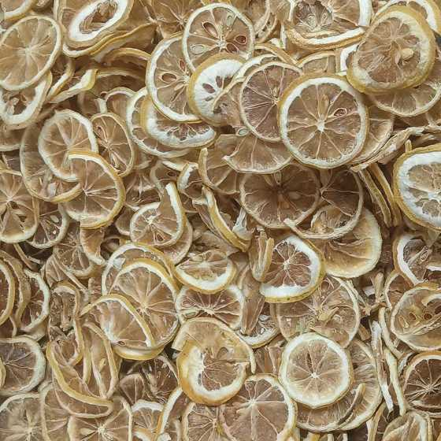

メニュー
メニューは準備中です
商品の内容・価格は確認できていないため、掲載していません。
枠だけご用意
六つの枠
- 1メニュー枠 1準備中
- 2メニュー枠 2準備中
- 3メニュー枠 3準備中
- 4メニュー枠 4準備中
- 5メニュー枠 5準備中
- 6メニュー枠 6準備中
実際のメニューは、お店からご提供いただいた情報で差し替えます。
写真(イメージ)
ギャラリー その1



写真(イメージ)
ギャラリー その2


写真はフリー素材のイメージです。お店のものではなく、お店で提供している商品を示すものでもありません。